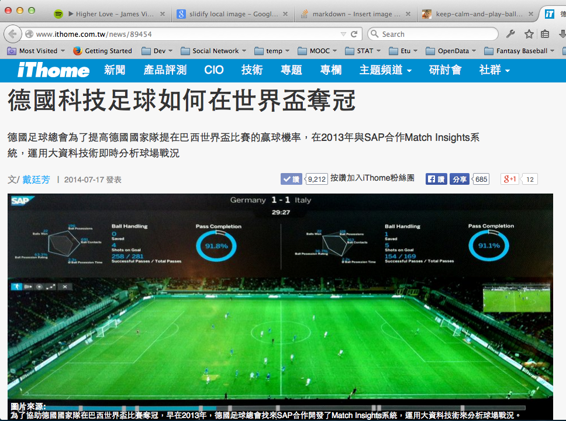
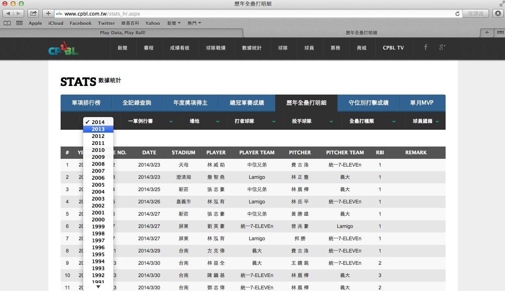

Play Data, Play Ball!
Exploring Baseball Data with R
Summit Suen + Wayne Chen
Etu Taiwan
說到運動資料的分析，你會想到的是...

我也是看到報紙才知道（欸
- MLB
- NBA
- NFL
- World Cup 2014
CPBL
我也是看到報紙才知道

我也是看到報紙才知道

別人在上太空，我們還在殺豬公。
Sabermatrics：賽伯計量學
歷史
box score
Bill James
edX: Boston U Sabermetric 101
前人寫扣，後人乘涼
library(Lahman)
library(dplyr)
head(filter(Batting, playerID == "jeterde01"))
## playerID yearID stint teamID lgID G G_batting AB R H X2B X3B HR
## 1 jeterde01 1995 1 NYA AL 15 15 48 5 12 4 1 0
## 2 jeterde01 1996 1 NYA AL 157 157 582 104 183 25 6 10
## 3 jeterde01 1997 1 NYA AL 159 159 654 116 190 31 7 10
## 4 jeterde01 1998 1 NYA AL 149 149 626 127 203 25 8 19
## 5 jeterde01 1999 1 NYA AL 158 158 627 134 219 37 9 24
## 6 jeterde01 2000 1 NYA AL 148 148 593 119 201 31 4 15
## RBI SB CS BB SO IBB HBP SH SF GIDP G_old
## 1 7 0 0 3 11 0 0 0 0 0 15
## 2 78 14 7 48 102 1 9 6 9 13 157
## 3 70 23 12 74 125 0 10 8 2 14 159
## 4 84 30 6 57 119 1 5 3 3 13 149
## 5 102 19 8 91 116 5 12 3 6 12 158
## 6 73 22 4 68 99 4 12 3 3 14 148
前人寫扣，後人繼續乘涼
library(pitchRx)
## Error in library(pitchRx): there is no package called 'pitchRx'
# 即時抓取MLB Game Day資料
#
library(OpenWAR)
## Error in library(OpenWAR): there is no package called 'OpenWAR'
# Open Project for WAR (Win Above Replacement)
前人寫扣，後人不能一直乘涼
自己的國家自己救
自己的 crawler/analyzer 自己寫！
巧婦難為無米之炊：資料哪裡來？

第一次用Ｒ寫爬蟲就上手
## RSelenium + phantomJS
library(XML)
library(RSelenium)
pJS <- phantom()
Sys.sleep(5)
remDr <- remoteDriver(browserName = 'phantomjs')
remDr$open()
url <- 'http://www.cpbl.com.tw/stats_hr.aspx'
remDr$navigate(url)
資料在手，跟我走！
load("~//Documents//OpenDataProj//sc_tables.RData")
load("~//Documents//OpenDataProj//hr_tables.RData")
# 賽伯計量學的畢達哥拉斯定理
win_pc <- function(RS, RA) {
perc <- RS^2 / (RS^2 + RA^2)
return(perc)
}
用Ｒ畫圖跟你想的不一樣
library(ggplot2)
（並沒有）令十三億人都震驚的事實
想要玩更多分析嗎？來吧，我把資料都放在這裡了，讓我們一起迎接大數據時代！！！

可是瑞凡，我回不去了
還想做更多